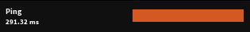
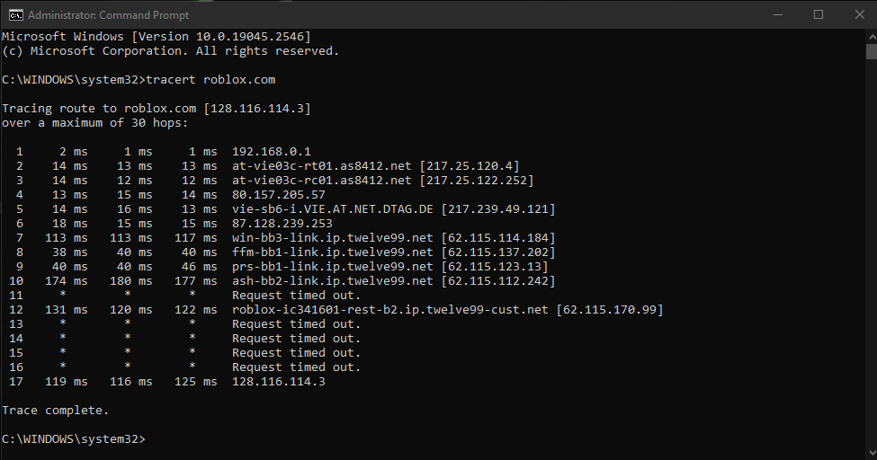

Hallo liebe Community!
Ich bin von einen Drei Mobile Internet Tarif umgestiegen auf
Gigakraft 250
umgestiegen.
Bin bis jetzt zufrieden mit guten Ping etc. bissauf auf einen Game.
Roblox, ist für wessen Grund auch immer auf
400ms 250ms
oder den gleichen. Diese hatte ich vorher nicht. Auch wenn ich das
LTE
von
meinen Handy (A1)
nehme
verbessert
sich der
Ping.
Habe auch öfters meinen
Router neugestartet
und auch mein
Netzwerkadapter
Einstellungen auf meinen
PC zurückgestellt.
Und ja ich bin auf
EU Server
(
Frankfurt
, etc. auch
UK Server
sind gleich)
Danke im Voraus
Hallo @Darkey ,
schick uns mal eine Traceroute hier zu. Was nutzt du derzeit für ein Modem? Den höheren Ping hast du nur bei diesem Game oder ist dieser auch bei Anderen etwas höher?
LG JD.
vor 4 Stunden schrieb Jonathan Dorian:Hallo @Darkey ,
schick uns mal eine Traceroute hier zu. Was nutzt du derzeit für ein Modem? Den höheren Ping hast du nur bei diesem Game oder ist dieser auch bei Anderen etwas höher?
LG JD.
Heyo!
Modem ist der Fiber box? (Sagt mir halt nicht mehr)
Hab nen tracert gemacht mit
roblox.com
gemacht dieser zeigt einen max ms von 177ms habe aber in UK Server bsp

diesen Ping hier.

Das hatte ich alles davor nicht bevor ich gewechselt habe.
Und nein, bei jeden anderen Game ist es viel besser 15 ms etc. (UK und EU egal welche)
LG JP